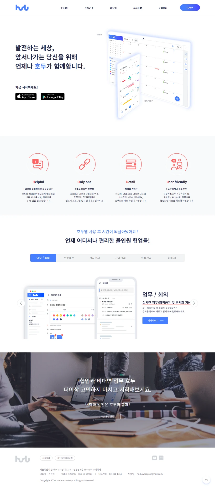
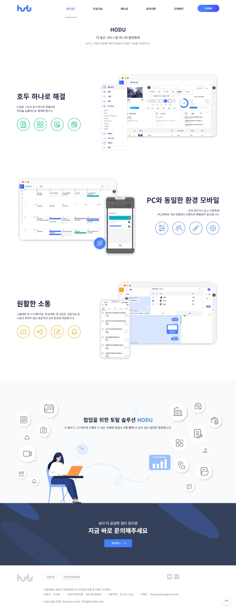

CASE STUDY 01 / HODU WEBSITE
호두 홈페이지 리뉴얼
복잡한 기능을 짧고 명확하게 소개하는 웹사이트
기존 메인 비주얼은 대부분 유지하고, 나머지 영역을 개편했습니다. 메인 비주얼을 제외한 디자인·문구 작성·이미지 제작과 전체 퍼블리싱을 담당했습니다.
01 완성 화면


02 핵심만 골라 보여준 일정관리
기능을 빠르게 이해할 수 있도록, 웹앱·모바일앱 화면에서 핵심 내용을 골라 편집하고 짧은 소개 문구와 함께 구성했습니다.

03 디자인을 웹 화면으로 구현
HTML·CSS로 메인과 소개 페이지를 구성하고, 화면 너비별 레이아웃을 정의했습니다.
jQuery와
Slick을 사용한 기능 소개 탭·슬라이더, 모바일 메뉴, 상단 이동 동작을 작성했습니다.
서비스 소개에 필요한 콘텐츠 구성부터 디자인·이미지 제작·퍼블리싱까지 연결한 실무 프로젝트입니다.
웹 퍼블리싱 보기 ↗ (새 창)